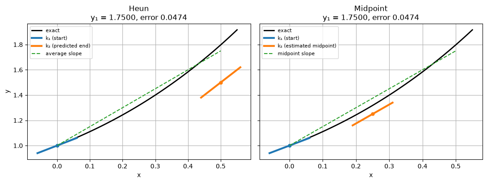
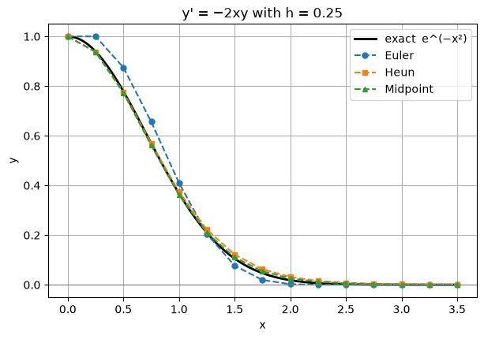

Euler’s method uses a single slope, taken at the start of the step. Runge–Kutta methods evaluate \(f\) at a few trial points inside the step (called stages) and combine the slopes into a better estimate of the average slope. This section covers the methods with two stages: Heun, midpoint and Ralston. All three have order 2.
Test problem: \(y' = x + y\), \(y(0) = 1\), exact solution \(y = 2e^{x} - x - 1\).
Quick note: RK2 with a calculator
Use: solve \(y' = f(x, y)\), \(y(x_0) = y_0\), one step at a time with step size \(h\).
One step (Heun’s method):
Slope at the start: \(k_1 = f(x_n,\ y_n)\)
Slope at the end (using an Euler guess for \(y\)): \(k_2 = f(x_n + h,\ y_n + h\,k_1)\)
Average the slopes and step: \(y_{n+1} = y_n + \dfrac{h}{2}(k_1 + k_2)\)
Move along: \(x_{n+1} = x_n + h\), then repeat.
Each step needs only multiplication, addition and \(f\), so a basic calculator is enough.
Check: the exact answer is \(y(0.2) = 2e^{0.2} - 1.2 = 1.242806\), so the error is about \(0.0008\). Euler’s method with the same \(h\) has an error about 10 times larger.
Tips for working by hand
Lay it out as a table: \(n\), \(x_n\), \(y_n\), \(k_1\), Euler guess, \(k_2\), \(y_{n+1}\).
\(h/2\) is just a number (here \(0.05\)), so work it out once.
Keep 5 to 6 decimal places in the middle of the working and round only at the end.
Halving \(h\) cuts the error to about \(\tfrac14\).
Code
import numpy as npimport matplotlib.pyplot as pltplt.rcParams["figure.figsize"] = (7, 4.5)plt.rcParams["axes.grid"] =Truenp.set_printoptions(precision=6, suppress=True)f =lambda x, y: x + yexact =lambda x: 2* np.exp(x) - x -1def euler(f, x0, y0, h, n): x, y = np.zeros(n +1), np.zeros(n +1) x[0], y[0] = x0, y0for i inrange(n): y[i +1] = y[i] + h * f(x[i], y[i]) x[i +1] = x[i] + hreturn x, y
2.1 Heun’s method (improved Euler)
Derivation from the trapezoidal rule. Estimate the integral in \(y(x_{n+1}) = y(x_n) + \int_{x_n}^{x_{n+1}} f\,dx\) with the trapezoidal rule, which averages the slopes at both ends of the step:
The problem is that \(y_{n+1}\) appears on both sides (the formula is implicit). Heun’s fix is to first predict\(y_{n+1}\) with an Euler step and then correct it with the trapezoidal average. That makes it a predictor–corrector method:
\[
\begin{aligned}
k_1 &= f(x_n, y_n) && \text{slope at the start}\\
y^{*}_{n+1} &= y_n + h k_1 && \text{predictor (an Euler step)}\\
k_2 &= f(x_{n+1}, y^{*}_{n+1}) && \text{slope at the predicted end point}\\
y_{n+1} &= y_n + \tfrac{h}{2}(k_1 + k_2) && \text{corrector: use the average slope}
\end{aligned}
\]
Why it is better. If the curve is concave up, the start slope \(k_1\) is too small and the end slope \(k_2\) is too large, so their average largely cancels the error. The local error becomes \(O(h^3)\) and the global error \(O(h^2)\), so Heun is order 2. Halving \(h\) divides the error by about 4. Each step costs 2 evaluations of \(f\).
After three steps the error is \(0.00125\), about 30 times smaller than Euler’s \(0.0377\) (Section 1.2), for twice the work.
2.2 The midpoint method
Derivation from the midpoint rule. Approximate the integral by \(h\) times the slope at the middle of the step, \(x_n + h/2\). The value of \(y\) there is unknown, so estimate it with half an Euler step:
and ask: which \(b_1, b_2, c\) make the method agree with the Taylor series of the exact solution for as long as possible?
Taylor series of the exact solution. Differentiating \(y' = f(x, y)\) with the chain rule gives \(y'' = f_x + f_y\,y' = f_x + f f_y\), where subscripts denote partial derivatives evaluated at \((x_n, y_n)\). So
\[y(x_n + h) = y + h f + \frac{h^2}{2}\big(f_x + f f_y\big) + O(h^3).\]
Taylor series of the method. Expand \(k_2\) in two variables:
\[k_2 = f(x + ch,\ y + chf) = f + ch\,f_x + ch f\,f_y + O(h^2),\]
so
\[y_{n+1} = y + h\,(b_1 + b_2)\,f + h^2\,b_2 c\,\big(f_x + f f_y\big) + O(h^3).\]
Matching the \(h\) and \(h^2\) terms for every \(f\) requires
Two equations for three unknowns: one free parameter \(c\), with \(b_2 = \tfrac{1}{2c}\) and \(b_1 = 1 - \tfrac{1}{2c}\).
\(c\)
\(b_1\)
\(b_2\)
Method
\(1\)
\(\tfrac12\)
\(\tfrac12\)
Heun
\(\tfrac12\)
\(0\)
\(1\)
midpoint
\(\tfrac23\)
\(\tfrac14\)
\(\tfrac34\)
Ralston
Why two stages cannot reach order 3. The \(h^3\) term of the exact solution contains \(y^{\prime\prime\prime} = f_{xx} + 2ff_{xy} + f^2 f_{yy} + f_y(f_x + ff_y)\). The method’s \(h^3\) term comes only from the second-order part of the expansion of \(k_2\), which contains \(f_{xx}, f_{xy}, f_{yy}\) but never the product \(f_y(f_x + f f_y)\). No choice of \(b_1, b_2, c\) can match it, so order 3 needs at least three stages.
Ralston’s choice\(c = \tfrac23\) minimises a bound on the \(h^3\) error term over all \(f\), so it is often slightly more accurate than Heun or midpoint.
The code implements the whole family with \(c\) as a parameter.
Code
def rk2(f, x0, y0, h, n, c): b2 =1/ (2* c) b1 =1- b2 x, y = np.zeros(n +1), np.zeros(n +1) x[0], y[0] = x0, y0for i inrange(n): k1 = f(x[i], y[i]) k2 = f(x[i] + c * h, y[i] + c * h * k1) y[i +1] = y[i] + h * (b1 * k1 + b2 * k2) x[i +1] = x[i] + hreturn x, yralston =lambda f, x0, y0, h, n: rk2(f, x0, y0, h, n, 2/3)# rk2 with c = 1 and c = 1/2 must reproduce Heun and midpoint exactlyprint(np.max(np.abs(rk2(f, 0, 1, 0.1, 10, 1.0)[1] - heun(f, 0, 1, 0.1, 10)[1])))print(np.max(np.abs(rk2(f, 0, 1, 0.1, 10, 0.5)[1] - midpoint(f, 0, 1, 0.1, 10)[1])))
0.0
0.0
2.4 Comparing the family
A caution about the test problem. For \(f = x + y\) every member of the family gives the same numbers. With \(k_1 = x_n + y_n\),
which does not depend on \(c\). Because \(f\) is linear, the second derivatives \(f_{xx}, f_{xy}, f_{yy}\) vanish and the only place the methods could differ disappears. To compare them we need an \(f\) that is nonlinear in \(x\) or \(y\):
p =lambda x, y: y - x**2+1p_exact =lambda x: (x +1)**2-0.5* np.exp(x)methods = {"Euler": euler, "Heun": heun, "Midpoint": midpoint, "Ralston": ralston}hs = [0.2, 0.1, 0.05, 0.025]print(f"error at x = 2 for y' = y − x² + 1\n{'h':>7}"+"".join(f"{m:>12}{'ratio':>7}"for m in methods))errs = {m: [] for m in methods}for i, h inenumerate(hs): row =f"{h:7.3f}"for m, method in methods.items(): _, y = method(p, 0, 0.5, h, round(2/ h)) errs[m].append(abs(p_exact(2) - y[-1])) ratio =f"{errs[m][-2] / errs[m][-1]:7.2f}"if i else" "*7 row +=f"{errs[m][-1]:12.3e}{ratio}"print(row)
error at x = 2 for y' = y − x² + 1
h Euler ratio Heun ratio Midpoint ratio Ralston ratio
0.200 4.397e-01 7.242e-02 1.510e-02 3.421e-02
0.100 2.420e-01 1.82 1.890e-02 3.83 3.747e-03 4.03 8.800e-03 3.89
0.050 1.275e-01 1.90 4.820e-03 3.92 9.277e-04 4.04 2.225e-03 3.95
0.025 6.550e-02 1.95 1.216e-03 3.96 2.304e-04 4.03 5.590e-04 3.98
The ratios approach \(2\) for Euler and \(4\) for the three second-order methods. On this problem the midpoint method has the smallest error and Heun the largest, with Ralston in between. Ralston’s choice minimises a bound over all\(f\), which does not make it the best for every particular \(f\). All three are far ahead of Euler.
2.5 Seeing the slopes
One large step (\(h = 0.5\)) on the test problem shows where each method samples the slope. Heun samples at the end of the step, midpoint in the middle. Short thick lines mark each sampled slope; the dashed line is the step actually taken.
Code
def slope_mark(ax, x, y, s, color, label=None): d =0.06 ax.plot([x - d, x + d], [y - d * s, y + d * s], color=color, lw=3, label=label) ax.plot(x, y, "o", color=color, ms=5)h, x0, y0 =0.5, 0.0, 1.0xf = np.linspace(0, 0.55, 100)fig, axes = plt.subplots(1, 2, figsize=(11, 4.2), sharey=True)for ax in axes: ax.plot(xf, exact(xf), "k", lw=2, label="exact") ax.set_xlabel("x")axes[0].set_ylabel("y")k1 = f(x0, y0)k2 = f(x0 + h, y0 + h * k1)y_h = y0 + h /2* (k1 + k2)slope_mark(axes[0], x0, y0, k1, "C0", "k₁ (start)")slope_mark(axes[0], x0 + h, y0 + h * k1, k2, "C1", "k₂ (predicted end)")axes[0].plot([x0, h], [y0, y_h], "C2--", label="average slope")axes[0].set_title(f"Heun\ny₁ = {y_h:.4f}, error {exact(h) - y_h:.4f}")m2 = f(x0 + h /2, y0 + h /2* k1)y_m = y0 + h * m2slope_mark(axes[1], x0, y0, k1, "C0", "k₁ (start)")slope_mark(axes[1], x0 + h /2, y0 + h /2* k1, m2, "C1", "k₂ (estimated midpoint)")axes[1].plot([x0, h], [y0, y_m], "C2--", label="midpoint slope")axes[1].set_title(f"Midpoint\ny₁ = {y_m:.4f}, error {exact(h) - y_m:.4f}")for ax in axes: ax.legend(loc="upper left", fontsize=8)plt.tight_layout()

The two methods sample different slopes but land on the same value, as Section 2.4 predicted for this linear test problem.
2.6 Example: a problem where Euler misbehaves
\[y' = -2xy, \qquad y(0) = 1, \qquad \text{exact solution } y = e^{-x^2}, \qquad h = 0.25.\]
Euler’s update is \(y_{n+1} = (1 - 2x_n h)\,y_n\). At \(x_n = 2\) the factor is exactly \(0\), and for \(x_n > 2\) it is negative, so Euler’s solution hits zero and then changes sign at every step. The true solution is positive and decays smoothly. (Section 5 explains this as an instability: the step is too large for how quickly the solution decays.)
Code
g =lambda x, y: -2* x * yg_exact =lambda x: np.exp(-x**2)h, n =0.25, 14xf = np.linspace(0, 3.5, 300)plt.plot(xf, g_exact(xf), "k", lw=2, label="exact e^(−x²)")for name, method, style in [("Euler", euler, "o--"), ("Heun", heun, "s--"), ("Midpoint", midpoint, "^--")]: x, y = method(g, 0, 1, h, n) plt.plot(x, y, style, ms=5, label=name)print(f"{name:8s} max |error| = {np.max(np.abs(y - g_exact(x))):.4f}")plt.axhline(0, color="gray", lw=0.8)plt.xlabel("x"); plt.ylabel("y"); plt.title("y' = −2xy with h = 0.25"); plt.legend();
Euler max |error| = 0.0962
Heun max |error| = 0.0161
Midpoint max |error| = 0.0084

2.7 Summary
Method
Stages (\(f\) evaluations per step)
Order
Idea
Euler
1
1
slope at the start
Heun
2
2
average of start slope and predicted end slope
Midpoint
2
2
slope at an estimated midpoint
Ralston
2
2
the member of the family with the smallest error bound
Every two-stage method with \(b_1 + b_2 = 1\) and \(b_2c = \tfrac12\) has order 2. Two stages can never give order 3.
On a linear test problem all of them agree. Use a nonlinear problem to tell them apart.
Exercises
For \(y' = y - x^2 + 1\), \(y(0) = 0.5\), take one step with \(h = 0.2\) using Heun, midpoint and Ralston by hand. Compare with \(y(0.2) = 1.44 - 0.5e^{0.2}\).
Show that for \(y' = x + y\), \(y(0) = 1\), the first step of any member of the family gives \(y_1 = 1 + h + h^2\). How does this compare with the Taylor series \(y(h) = 1 + h + h^2 + h^3/3 + \cdots\)?
Apply a two-stage method to \(y' = 1\). Show that it gives the exact answer only if \(b_1 + b_2 = 1\). (This is why that condition is called consistency.)
Write down the member of the family with \(c = \tfrac34\) and measure its order numerically.
\(k_1 = 1\), \(k_2 = 1 + ch(1 + 1) = 1 + 2ch\), so \(y_1 = 1 + h(b_1 + b_2) + 2b_2c\,h^2 = 1 + h + h^2\). It matches the Taylor series up to \(h^2\) and misses \(h^3/3\): that is the local error.
\(k_1 = k_2 = 1\), so \(y_{n+1} = y_n + (b_1 + b_2)h\), while the exact solution increases by \(h\).
\(b_2 = \tfrac23\), \(b_1 = \tfrac13\). See the cell below: the error ratio approaches 4.
Code
for name, method in [("Heun", heun), ("Midpoint", midpoint), ("Ralston", ralston)]: _, y = method(p, 0, 0.5, 0.2, 1)print(f"1. {name:8s} y(0.2) ≈ {y[1]:.6f} (exact {p_exact(0.2):.6f})")prev =Nonefor h in [0.2, 0.1, 0.05, 0.025]: _, y = rk2(p, 0, 0.5, h, round(2/ h), c=3/4) err =abs(p_exact(2) - y[-1])print(f"4. c = 3/4, h = {h:5}: error {err:.3e}"+ (f", ratio {prev / err:.2f}"if prev else"")) prev = err
1. Heun y(0.2) ≈ 0.826000 (exact 0.829299)
1. Midpoint y(0.2) ≈ 0.828000 (exact 0.829299)
1. Ralston y(0.2) ≈ 0.827333 (exact 0.829299)
4. c = 3/4, h = 0.2: error 4.376e-02
4. c = 3/4, h = 0.1: error 1.133e-02, ratio 3.86
4. c = 3/4, h = 0.05: error 2.874e-03, ratio 3.94
4. c = 3/4, h = 0.025: error 7.233e-04, ratio 3.97